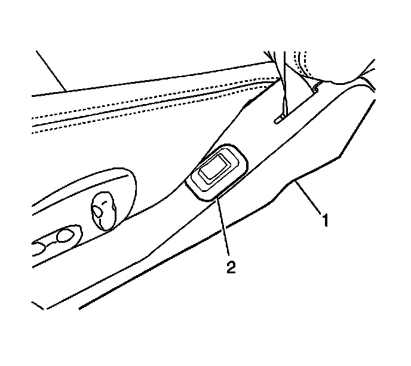

Lumbar Switch Replacement
Lumbar Switch Replacement
Removal Procedure

1. Remove the seat track trim cover (1) from the seat.
2. Disconnect the lumbar switch (2) electrical connector.
3. Remove the lumbar switch.
Installation Procedure
1. Install the lumbar switch (2) into the seat track trim cover (1).
2. Connect the electrical connector.
3. Install the seat track trim cover to the seat.